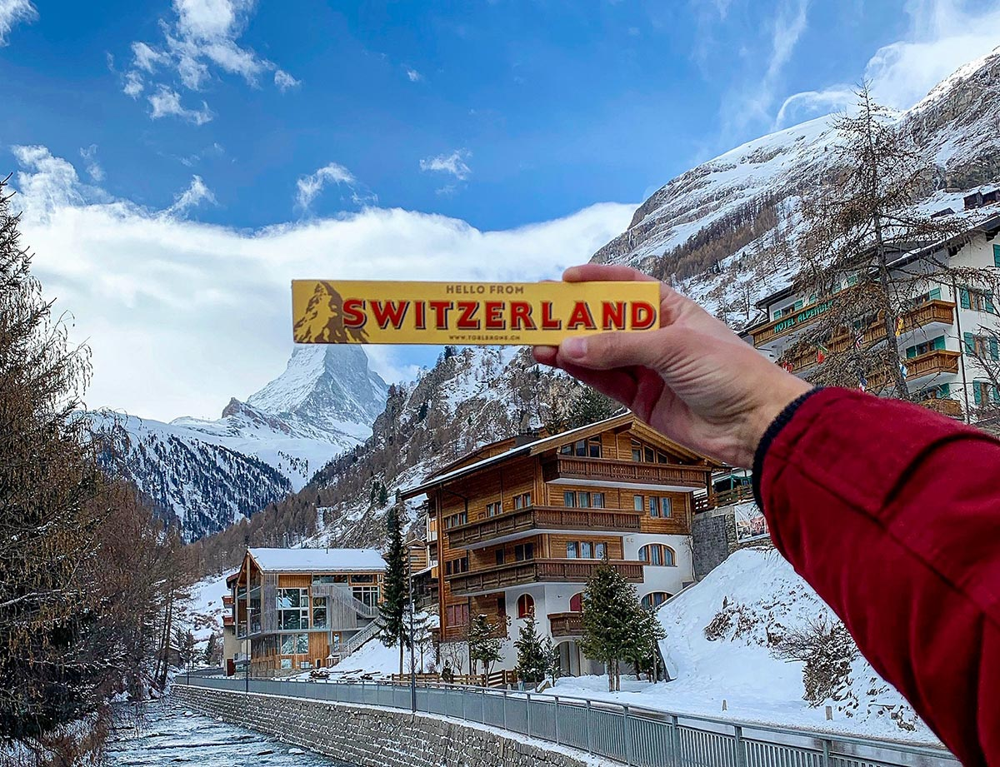

Rome

Switzerland
Egypt

Getting away from home gives you the opportunity to reflect on your life.You have the needed time and space to let your mind wander and take stock. Traveling is one of the best ways
to learn more about yourself. Every day traveling brings a new set of issues and opportunities.
The way you handle those also gives you insight into who you are. You’ll come home knowing yourself better, and with a fresh perspective on what you want out of life.
The experience will change your life.

Ah, London - home to world-class restaurants, an unparalleled music scene, and some seriously rich history. Plus, tea.Who could forget the tea? London is a wonderful city to visit, and with England's fantastic public transportation,
it's a breeze to get from point A to point B. You could easily spend a week or more exploring all that each London neighborhood has to offer, and still have things left over for your next visit.
With sites and cultural hubs like the National Portrait Gallery, Trafalgar Square, the Tower of London, Tower Bridge,
Kensington Gardens, and all manner of food, drink, shopping, history, and culture, it's no wonder why the 'Big Smoke' is
a top travel destination.

Paris. Poets, artists, playwrights, writers, journalists, and more have all written about their love of this city….
and it’s hard not to fall in love with Paris. It’s a place that exudes culture, sophistication, class, and style.
And, like the millions before me, I fell in love with this city the first time I visited.
Paris is one of the few cities in the world that truly lives up to its hype.